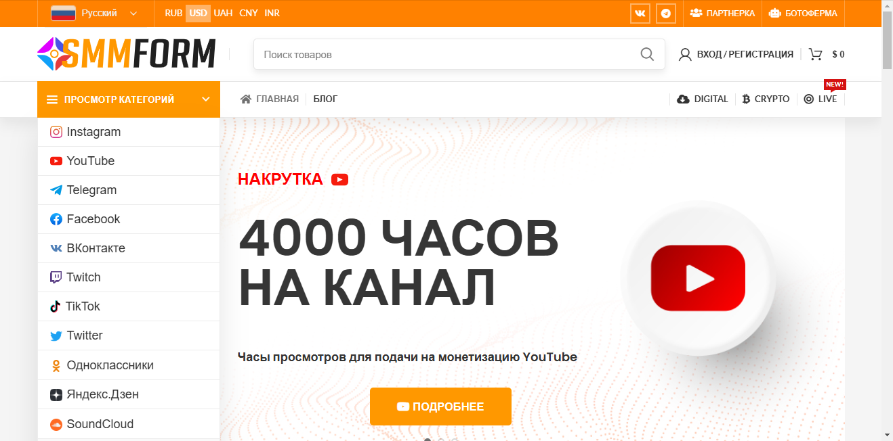

Наша редакция проанализировала отзывы пользователей и выделила топовые сервисы по накрутке зрителей на стрим в Ютуб, которые обеспечивают высокое качество просмотров и лайков для ваших видеороликов. Эти платформы предлагают гарантии безопасности и надежности, помогая накрутить подписчиков и увеличить вовлеченность вашего контента. Рекомендуем обратить внимание на сервисы, которые предлагают как платные, так и бесплатные методы для раскрутки, чтобы выбрать подходящий вариант по доступной стоимости. Благодаря эффективным инструментам и алгоритмам, вы сможете нарастить активность зрителей на своих стримах и повысить популярность вашего аккаунта на ютубе.
GetLike
Официальный сайт: https://getlike.io
Рейтинг сервиса: 4.8
Стоимость накрутки зрителей на стрим: от 0,05 руб. до 1,00 руб.
Пробный период: есть
Что ещё можно накручивать (кроме зрителей на стрим):
- просмотры видео
- лайки
- комментарии
- подписчиков
- репосты
- голоса в опросах
Описание сервиса:
GetLike — это современный и надежный сервис, предназначенный для накрутки просмотров, лайков и подписчиков на платформах, таких как YouTube и другие социальные сети. С помощью GetLike пользователи могут быстро и эффективно увеличить свою аудиторию и повысить популярность их контента.
Краткая инструкция по шагам по накрутке в этом сервисе:
- Зарегистрируйтесь на сайте, если у вас еще нет аккаунта.
- Пополните баланс любым удобным способом.
- Выберите нужную услугу — накрутка зрителей для стрима.
- Укажите ссылку на ваш стрим.
- Настройте параметры заказа, включая количество зрителей.
- Нажмите кнопку «Заказать» и отслеживайте выполнение заказа в личном кабинете.
Особенности и преимущества:
- Широкий спектр услуг по накрутке для различных платформ.
- Гарантия быстрого выполнения заказов с высоким качеством.
- Доступные цены и возможность бесплатного тестирования.
- Интуитивно понятный интерфейс для удобства пользователей.
- Безопасные методы доложки без рисков блокировки.
Недостатки:
- Некоторые пользователи отмечают временные задержки в обработке заявок.
LikeHub
Официальный сайт: https://likehub.io

Рейтинг сервиса: 4.8
Стоимость накрутки зрителей на стрим: от 0,05 руб. до 1,50 руб.
Пробный период: есть
Что ещё можно накручивать (кроме зрителей на стрим):
- просмотры видео
- лайки под видео
- комментарии
- подписчиков
- репосты контента
- голоса в опросах
Описание сервиса:
LikeHub — это платформа, предлагающая услуги по накрутке просмотров и лайков на YouTube. Сервис помогает пользователям увеличить видимость их контента и привлечь более широкую аудиторию за счет безопасных методов работы и качественного обслуживания.
Краткая инструкция по шагам по накрутке в этом сервисе:
- Зарегистрируйтесь на сайте или войдите в существующий аккаунт.
- Пополните баланс с помощью удобных методов оплаты.
- Выберите желаемую услугу, например, накрутка зрителей на стрим.
- Укажите ссылку на ваш стрим на YouTube.
- Настройте параметры заказа (количество зрителей).
- Нажмите «Заказать» и следите за выполнением в личном кабинете.
Особенности и преимущества:
- Широкий выбор услуг по накрутке для YouTube.
- Безопасная и быстрая доставка услуг без рисков блокировки.
- Удобный интерфейс для пользователей.
- Высокая скорость выполнения заказов.
- Конкурентоспособные цены на услуги.
Недостатки:
- Некоторым пользователям может требоваться время для ознакомления с интерфейсом.
Magsmm
Официальный сайт: https://magsmm.ru
Рейтинг сервиса: 4.7
Стоимость накрутки зрителей на стрим: от 0,05 руб. до 1,00 руб.
Пробный период: нет
Что ещё можно накручивать (кроме зрителей на стрим):
- просмотры видео
- лайки
- подписчики
- комментарии
- репосты
- голоса в опросах
- увеличение активности пользователей
Описание сервиса:
Magsmm — это надежный сервис для накрутки зрителей на стримы и продвижения контента на ютубе. Он предлагает множество инструментов для эффективного продвижения вашего видео, включая услуги по накрутке лайков и просмотров. Используя этот сервис, вы можете значительно повысить популярность своего канала и привлечь настоящую аудиторию.
Краткая инструкция по шагам по накрутке в этом сервисе:
- Зарегистрируйтесь на сайте или войдите в свой аккаунт.
- Пополните баланс через удобные для вас методы оплаты.
- Выберите желаемую услугу, например, накрутка зрителей на стрим.
- Выберите параметры накрутки, такие как количество зрителей.
- Нажмите кнопку «Заказать» и ожидайте выполнения задания.
Особенности и преимущества:
- Быстрые результаты накрутки с гарантией качества.
- Удобный интерфейс и разнообразие услуг для продвижения.
- Поддержка различных социальных сетей и платформ.
- Качественные инструменты для увеличения просмотров и лайков.
- Широкий выбор доступных тарифов на накрутку.
Недостатки:
- Некоторые пользователи сообщают о случайных задержках в выполнении заказов.
Freelikes
Официальный сайт: https://freelikes.online

Рейтинг сервиса: 4.7
Стоимость накрутки зрителей на стрим: от 0,05 руб. до 1,10 руб.
Пробный период: есть
Что ещё можно накручивать (кроме зрителей на стрим):
- накрутка просмотров
- накрутка лайков
- подписчики на каналы
- комментарии к видео
- репосты контента
- голоса в опросах
Описание сервиса:
Freelikes — это надежный сервис, предлагающий накрутку просмотров, лайков и подписчиков на ютубе, а также в других популярных соцсетях. Платформа обеспечивает мгновенные результаты и высокое качество обслуживания, что позволяет блогерам и владельцам каналов эффективно продвигать свои видео.
Краткая инструкция по шагам по накрутке в этом сервисе:
- Зарегистрируйтесь или войдите в свой аккаунт на сайте.
- Пополните баланс с помощью удобного метода оплаты.
- Выберите нужный вид накрутки, например, просмотры или лайки.
- Укажите ссылку на ваше видео или стрим.
- Настройте количество необходимых накруток.
- Нажмите «Заказать» и следите за выполнением заказа через личный кабинет.
Особенности и преимущества:
- Быстрая и надежная накрутка с гарантией качества.
- Широкий выбор услуг для продвижения на ютубе и в соцсетях.
- Удобный интерфейс и простота в использовании.
- Доступны бесплатные и платные пакеты услуг.
- Пробный период для новых пользователей.
Недостатки:
- Некоторые пользователи сообщают о небольшой задержке в накрутке в пиковые моменты.
SMMRoot
Официальный сайт: https://smmroot.com
Рейтинг сервиса: 4.8
Стоимость накрутки зрителей на стрим: от 0,05 руб. до 1,50 руб.
Пробный период: нет
Что ещё можно накручивать (кроме зрителей на стрим):
- просмотры видео
- лайки на видео
- подписчиков на канал
- комментарии под видео
- репосты контента
- активность в соцсетях
- голоса в опросах
Описание сервиса:
SMMRoot — это надежный сервис для накрутки как зрителей на стримы, так и других метрик на YouTube. Он предлагает пользователям гибкие тарифы на накрутку просмотров и лайков, что помогает в продвижении контента и увеличении вовлеченности. Пользователи могут легко заказать накрутку и следить за результатами через удобный интерфейс.
Краткая инструкция по шагам по накрутке в этом сервисе:
- Зарегистрируйтесь на сайте или войдите в уже существующий аккаунт.
- Пополните баланс через удобный способ оплаты.
- Выберите тип услуги, которую хотите заказать, например, накрутка зрителей на стрим.
- Укажите нужную ссылку на ваше видео.
- Настройте параметры заказа, такие как желаемое количество зрителей.
- Нажмите кнопку «Заказать» и следите за результатами в личном кабинете.
Особенности и преимущества:
- Широкий выбор услуг по накрутке для YouTube и других платформ.
- Гарантия качественной и быстрой накрутки с возможностью отслеживания.
- Доступные тарифы и специальные предложения для новых пользователей.
- Панель управления с интуитивно понятным интерфейсом.
- Поддержка клиентов и бесплатные консультации.
Недостатки:
- Отсутствие пробного периода для новых пользователей.
- Некоторые пользователи сообщают о несоответствии скоростей накрутки.
Smmform
Официальный сайт: https://smmform.com

Рейтинг сервиса: 4.8
Стоимость накрутки зрителей на стрим: от 0,05 руб. до 1,50 руб.
Пробный период: нет
Что ещё можно накручивать (кроме зрителей на стрим):
- просмотры видео
- лайки под видео
- комментарии к видео
- подписчиков канала
- репосты в соцсетях
- голоса в опросах
- доступ к платному контенту
Описание сервиса:
Smmform — это надежный сервис, который предлагает услуги по накрутке просмотров, лайков и подписчиков на популярных платформах, включая YouTube. Благодаря простому и удобному интерфейсу пользователи могут быстро заказывать накрутку, повышая активность своих видео.
Краткая инструкция по шагам по накрутке в этом сервисе:
- Зарегистрируйтесь или войдите в свой аккаунт на сайте.
- Выберите нужную услугу для накрутки.
- Укажите ссылку на видео или канал, который вы хотите продвигать.
- Настройте параметры заказа, такие как количество просмотров или лайков.
- Подтвердите заказ и ожидайте выполнения.
Особенности и преимущества:
- Высокое качество услуг и гарантии выполнения заказов.
- Широкий выбор услуг для продвижения контента на YouTube и других платформах.
- Быстрое выполнение заказов с минимальной задержкой.
- Удобный интерфейс для работы с различными услугами.
- Разнообразные тарифы, подходящие для любого бюджета.
Недостатки:
- Отсутствие бесплатного пробного периода, что может отпугнуть новых пользователей.
FlexSMM
Официальный сайт: https://flexsmm.com
Рейтинг сервиса: 4.9
Стоимость накрутки зрителей на стрим: от 0,05 руб. до 1,50 руб.
Пробный период: нет
Что ещё можно накручивать (кроме зрителей на стрим):
- просмотры
- подписчики
- лайки
- комментарии
- репосты
- голоса в опросах
- показатели вовлеченности
Описание сервиса:
FlexSMM — это универсальный сервис, который предлагает качественные и эффективные инструменты для накрутки просмотров и подписчиков на платформах, включая YouTube. Он позволяет пользователям мгновенно повышать видимость их контента и привлекать внимание зрителей.
Краткая инструкция по шагам по накрутке в этом сервисе:
- Зарегистрируйтесь на сайте и создайте аккаунт.
- Пополните свой баланс удобным способом через разные тарифы.
- Выберите услугу — накрутку зрителей на стрим.
- Укажите ссылку на свой стрим или видео.
- Настройте параметры заказа, указав количество зрителей.
- Нажмите «Заказать» и следите за прогрессом выполнения в личном кабинете.
Особенности и преимущества:
- Автоматическая накрутка без задержек и простоев.
- Надежная компания с высокими рейтингами и положительными отзывами.
- Широкий выбор услуг для различных соцсетей и платформ.
- Удобный интерфейс с понятной навигацией и доступными тарифами.
- Гарантия быстрой и качественной выполнения заказов.
Недостатки:
- Нет возможности бесплатной накрутки зрителей.
- В редких случаях могут возникнуть задержки в выполнении заказа.
Foxsmm
Официальный сайт: https://foxsmm.ru

Рейтинг сервиса: 4.8
Стоимость накрутки зрителей на стрим: от 0,05 руб. до 1,50 руб.
Пробный период: есть
Что ещё можно накручивать (кроме зрителей на стрим):
- просмотры видео
- лайки
- подписчиков
- комментарии
- репосты
- голоса в опросах
Описание сервиса:
Foxsmm — это сервис, предлагающий накрутку просмотров, лайков и подписчиков на ютубе. Платформа работает с различными социальными сетями и предоставляет пользователям быстрые и качественные услуги по продвижению контента.
Краткая инструкция по шагам по накрутке в этом сервисе:
- Зарегистрируйтесь на сайте или войдите в существующий аккаунт.
- Пополните баланс удобным способом.
- Выберите услугу накрутки, например, зрителей на стрим.
- Укажите ссылку на видео или стрим.
- Настройте параметры накрутки, такие как количество просмотров.
- Нажмите кнопку “Заказать” и наблюдайте за прогрессом в личном кабинете.
Особенности и преимущества:
- Удобный интерфейс с простым процессом заказа.
- Гарантия качества и безопасность услуг.
- Широкий выбор акций и тарифных планов.
- Быстрая доставка услуг.
- Доступные цены для пользователей.
Недостатки:
- В редких случаях возможны задержки в выполнении заказов.
Primelike
Официальный сайт: https://primelike.ru

Рейтинг сервиса: 4.8
Стоимость накрутки зрителей на стрим: от 0,05 руб. до 2,00 руб.
Пробный период: есть
Что ещё можно накручивать (кроме зрителей на стрим):
- просмотры видео
- лайки
- подписчики
- комментарии
- репосты
- голоса в опросах
- увеличение активностей
Описание сервиса:
Primelike — это надежный сервис накрутки, который позволяет пользователям увеличивать количество зрителей на стримах и видео на ютубе, а также предлагает дополнительные инструменты для продвижения контента. Сервис обеспечивает быструю и безопасную накрутку, гарантируя качество и эффективное взаимодействие с аудиторией.
Краткая инструкция по шагам по накрутке в этом сервисе:
- Зарегистрируйтесь на сайте Primelike.
- Пополните баланс через удобные способы оплаты.
- Выберите желаемую услугу накрутки.
- Укажите ссылку на ваше видео или стрим.
- Настройте параметры накрутки.
- Запустите заказ и отслеживайте прогресс в личном кабинете.
Особенности и преимущества:
- Высокое качество накрутки с возможностью выбора из множества услуг.
- Гарантия безопасности аккаунта и отсутствие рисков банов.
- Быстрая доставка накрутки с возможностью отслеживания.
- Удобный интерфейс и доступные тарифы.
- Пробный период для оценки эффективности сервиса.
Недостатки:
- Некоторые пользователи отмечают, что накрутка может быть менее эффективной в дни, когда наблюдается высокая конкуренция.
Biglike
Официальный сайт: https://biglike.org

Рейтинг сервиса: 4.7
Стоимость накрутки зрителей на стрим: от 0,05 руб. до 2,00 руб.
Пробный период: есть
Что ещё можно накручивать (кроме зрителей на стрим):
- просмотры
- лайки
- подписчики
- комментарии
- репосты
- голоса в опросах
Описание сервиса:
Biglike — это надежный сервис, предоставляющий услуги накрутки просмотров и подписчиков для ютуба, обеспечивая высокое качество и скорость выполнения заказов. Платформа ориентирована на тех, кто хочет увеличить популярность своего контента за счет профессионального продвижения.
Краткая инструкция по шагам по накрутке в этом сервисе:
- Зарегистрируйтесь на сайте или войдите в свой аккаунт.
- Выберите услугу накрутки, например, зрителей на стрим.
- Укажите ссылку на ваше видео или канал.
- Настройте параметры заказа: количество зрителей и другие опции.
- Оплатите накрутку удобным способом.
- Отслеживайте прогресс выполнения в личном кабинете.
Особенности и преимущества:
- Быстрая доставка накрутки с гарантией качества.
- Широкий выбор услуг для продвижения на ютуб и других платформах.
- Прозрачные тарифы и эффективные методы работы.
- Специальные предложения для постоянных клиентов.
- Подробная статистика и отчеты о выполненных заказах.
Недостатки:
- Возможны задержки в выполнении заказов в пиковые часы.
SMM Push
Официальный сайт: https://smmpush.ru
Рейтинг сервиса: 4.8
Стоимость накрутки зрителей на стрим: от 0,03 руб. до 1,00 руб.
Пробный период: есть
Что ещё можно накручивать (кроме зрителей на стрим):
- просмотры видео
- лайки
- подписчики
- репосты
- комментарии
- голоса в опросах
- увеличение активности
Описание сервиса:
SMM Push — это надежный сервис для накрутки зрителей на стримы в YouTube, а также других социальных сетях. Платформа предлагает широкий выбор услуг для продвижения вашего контента, включая накрутку просмотров и лайков. SMM Push обеспечивает качественные накрутки с гарантией выполнения заказа.
Краткая инструкция по шагам по накрутке в этом сервисе:
- Зарегистрируйтесь на сайте или войдите в свой аккаунт.
- Пополните баланс через удобные способы оплаты.
- Выберите услугу, например, накрутку зрителей на стрим.
- Укажите ссылку на вашу трансляцию на YouTube.
- Настройте параметры накрутки, такие как количество зрителей.
- Нажмите кнопку “Заказать” и отслеживайте статус выполнения в личном кабинете.
Особенности и преимущества:
- Широкий спектр услуг по накрутке для YouTube и других платформ.
- Гарантия качественного выполнения заказов.
- Удобный и интуитивно понятный интерфейс для пользователей.
- Возможность бесплатной пробной накрутки.
- Быстрая доставка и поддержка клиентов.
Недостатки:
- Некоторые пользователи отмечают медленную доставку в часы пик.
Mnogo-golosov
Официальный сайт: https://mnogo-golosov.ru
Рейтинг сервиса: 4.8
Стоимость накрутки зрителей на стрим: от 0,05 руб. до 1,50 руб.
Пробный период: нет
Что ещё можно накручивать (кроме зрителей на стрим):
- просмотры
- лайки
- подписчиков
- комментарии
- репосты
- голоса в опросах
- активности
Описание сервиса:
Mnogo-golosov — это надежный сервис, предлагающий услуги по накрутке зрителей на стримы в Ютубе и дополнительные опции для продвижения контента. Сервис помогает пользователям быстро увеличить аудиторию и повысить популярность своих видео.
Краткая инструкция по шагам по накрутке в этом сервисе:
- Зарегистрируйтесь на сайте или войдите в свой аккаунт.
- Пополните баланс через удобный для вас способ.
- Выберите услугу, например, накрутку зрителей на стрим.
- Укажите ссылку на ваш стрим в Ютубе.
- Настройте параметры заказа, такие как количество зрителей.
- Нажмите «Заказать» и следите за выполнением в личном кабинете.
Особенности и преимущества:
- Быстрая и качественная накрутка зрителей на стримы в Ютубе.
- Разнообразие услуг, включая накрутку лайков и подписчиков.
- Удобный интерфейс и простая навигация.
- Гарантия выполнения заказов с максимальной скоростью.
- Для пользователей доступны разнообразные тарифы.
Недостатки:
- Нет пробного периода для новых пользователей.
Часто задаваемые вопросы о накрутке зрителей на стрим в Ютуб
Как накрутить просмотры на стрим в Ютуб?
Чтобы накрутить просмотры на стрим в Ютуб, можно воспользоваться специализированными сервисами. Эти платформы предлагают различные методы автоматической накрутки, включая запись стрима, что повышает количество зрителей в реальном времени. Важно выбирать качественные и надежные сервисы, чтобы гарантировать безопасность аккаунта и избежать санкций.
Зачем нужна накрутка зрителей на стримы?
Накрутка зрителей на стримы помогает повысить видимость видео среди пользователей Ютуб. Когда стримы получают большое количество просмотров, это привлекает внимание других пользователей. Таким образом, накрутка способствует увеличению вовлеченности контента, лайков и комментариев, что улучшает общее продвижение канала.
Как выбрать надежный сервис для накрутки зрителей?
При выборе сервиса для накрутки зрителей важно обращать внимание на отзывы и репутацию. Надежные сервисы предлагают качественную накрутку зрителей с гарантией безопасности, избегая использования ботов или накрученных аккаунтов. Проверьте, какие методы они используют для накрутки и какие отзывы оставляют пользователи о полученных результатах.
Можно ли накрутить лайки на стрим в Ютуб?
Да, накрутка лайков на стрим в Ютуб возможна. Сервисы предлагают услуги по накрутке лайков, что помогает повысить популярность вашего видео. При этом важно следить за качеством накрутки, чтобы не получить блокировку аккаунта из-за фальшивой активности.
Как накрутка зрителей влияет на продвижение канала?
Накрутка зрителей способствует увеличению популярности канала в Ютубе. Когда видео получает много просмотров, оно начинает подниматься в рекомендациях платформы, что в свою очередь привлекает новых подписчиков и пользователей, заинтересованных в качественном контенте. Это повышает шансы на успешную монетизацию канала.
Как накрутить подписчиков на стрим в Ютуб?
Для накрутки подписчиков на стрим в Ютуб можно использовать платные сервисы, которые обеспечивают добавление реальных пользователей. Высокая вовлеченность зрителей, наблюдаемая на ваших стримах, позитивно скажется на алгоритмах Ютуб, и они будут рекомендовать ваш контент более широкой аудитории.
Какие риски связаны с накруткой зрителей?
Основные риски накрутки зрителей включают возможность блокировки аккаунта и снижение вовлеченности от накрученных просмотров. Если сервис использует неактивные аккаунты или ботов, это может негативно сказаться на общей статистике канала. Всегда выбирайте безопасные и проверенные методы накрутки.
Как долго действует накрутка зрителей?
Длительность действия накрутки зрителей зависит от используемого сервиса и его методов. Некоторые сервисы предлагают накрутку на определённое время, а затем показатели могут вернуться к прежним значениям. Однако, если накрутка обеспечена качественными и активными пользователями, результаты могут сохраняться дольше и значительно увеличивать вовлеченность канала.
Как накрутка лайков влияет на алгоритмы Ютуб?
Накрутка лайков положительно влияет на алгоритмы Ютуба. Когда стримы получают большое количество лайков, это поднимает их в рейтингах и может улучшать видимость контента. Алгоритмы платформы отдают предпочтение тем видео, которые вызывают активные реакции от пользователей, что способствует дальнейшему продвижению.
Какие существуют альтернативные способы накрутки зрителей?
Альтернативные способы накрутки зрителей включают создание качественного контента, активное взаимодействие с аудиторией и использование рекламных методов. Эти подходы помогают привлекать реальных зрителей, что будет безопаснее и эффективнее с точки зрения долгосрочного продвижения на Ютубе.
Нужно ли использовать ботов для накрутки зрителей?
Использование ботов для накрутки зрителей крайне не рекомендуется. Это может привести к блокировке аккаунта и негативно сказаться на репутации канала. Вместо этого лучше обратиться к сервисам, которые предлагают накрутку реальных пользователей, что обеспечит большую безопасность и эффективность.
Как увеличить вовлеченность зрителей на стримах?
Для увеличения вовлеченности зрителей на стримах используйте интерактивные элементы, такие как опросы, сессии вопросов и ответов, а также активно взаимодействуйте с комментариями в реальном времени. Эти действия помогут удержать зрителей и повысят общую активность, что положительно скажется на метриках вашего канала.